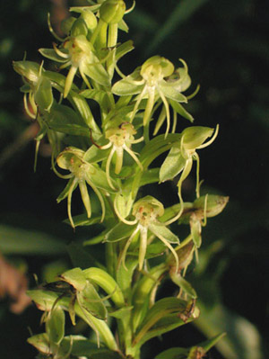

Previous || Next || Return to Mystery Plants || USC Herbarium
This Week's Mystery Plant | Dr. John B. Nelson Curator, USC Herbarium |
|
Wild orchids are always a crowd-pleaser. In the Southeast, there are plenty of different native orchid species, and some of these have relatively large, spectacular flowers. Among these striking orchids are the lady-slippers, grass-pinks, whorled pogonia, rosebud orchid, bog-rose, and showy orchis. Other orchids have flowers that are a bit more modest. This week's Mystery Plant is a species in the latter group. It is a bit unusual in that it is aquatic, mostly seen in very wet places. It occurs from southern Virginia all the way to eastern Texas, and then south into South America. In our area, it is a fairly common wetland plant, but it's often overlooked. The stems bear many leaves, and these tightly sheath the stem. The sword-shaped leaves themselves are bright green, or sometimes yellowish. In fact, the flowers tend to be greenish, sharing the color of the foliage, and so the flowers tend to be somewhat inconspicuous. These flowers are typical of orchids, though, in bearing three sepals and three petals. Each of the two upper petals is cleft into a pair of narrow segments. The third, lowest petal is also deeply divided, but into three very narrow, wiggly, thread-like portions. The whole effect of all this is that the flowers, which are crowded into a spike, appear something like little green spiders crawling around. The plants often develop slender, pale runners which can produce new flowering stems. This water-lover is blooming now, and will continue until frost. It can be seen in freshwater pools, golf-course ponds, and ditches, and it often occurs in great abundance, sometimes forming floating mats. It can be expected in all of the coastal plain counties of South Carolina. |
 Photo by Linda Lee |